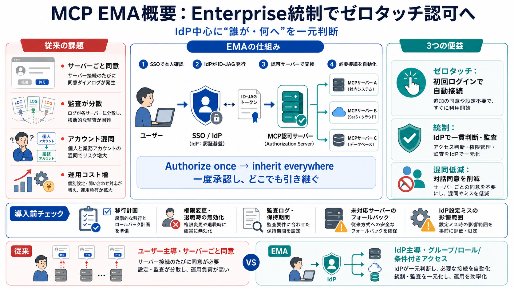

Cross App Access extends MCP to bring enterprise-grade security to ...
The blueprint for the secure agentic enterprise—every agent governed Register now →. Our platforms secure all types of…

MCPの拡張「Enterprise-Managed Authorization（EMA）」は、IdP（統合ID基盤）中心に認可を一元化し、初回ログイン時に必要なMCP接続を自動化します。
従来のMCP認可は、ユーザーごと・サーバーごとにOAuthのような同意（対話）を繰り返す設計になりがちです。
EMAは、企業のIdPが「誰が、どのグループ／ロールに基づき、どのMCPサーバーへアクセスできるか」を決定するモデルへ置き換えます。
EMAの内部フローは、SSOでIdPから Identity Assertion JWT Authorization Grant（ID-JAG） を取得し、MCP認可サーバーへ交換する流れです。
目的は「各MCPサーバーの同意画面にリダイレクトされない」体験と、IdP主導の統制を成立させることです。
従来はユーザー主導・サーバー主導になりやすいのに対し、EMAはIdPが“アクセス可否”を決め、結果を引き継がせます。
EMAは、オンボーディング摩擦、監査の一元化、個人／業務アカウント混同の低減を同時に狙います。
従来はユーザーがサーバーごとに認可し、導入・異動・権限変更のたびに手間が増えます。
EMAは「誰が、いつ、どのMCPサーバーにアクセスできたか」と、その根拠（グループ／ロール／条件付きアクセス）をIdP側で一貫管理することを狙います。
対話的なアカウント選択や同意フローがあると、誤ったアカウント接続が起こり得ます。
EMAは“単体対応”だけでなく、相互接続が成立する組み合わせが重要である点を意識した動きになっています。
（または追加中とされるサーバーが含まれます。）
EMAは既存OAuthを“そのまま置き換える”というより、企業向け認可フローをIdP起点へ統制する拡張として説明されています。
EMAは対応事例が挙げられていますが、網羅的な互換性は記事中で明示されていません。
EMAの主張は、企業導入で認可の摩擦がセキュリティ統制や監査性を損ね、利用が進まないという経験則に整合します。
利点中心の説明に比べ、移行時の課題や障害・無効化・ログ粒度など、現実の運用論点が十分に踏み込まれていません。
EMA導入では「楽になる」だけでなく、移行・無効化・監査・フォールバックまで含む運用設計を事前に確認するのが重要です。
記事中では、ext-authリポジトリや仕様ページの確認が推奨されています。以下は本文の“参照先カテゴリ”を要約したものです。
※本文にはURLの明示がないため、ここでは参照カテゴリとして整理しています。
The blueprint for the secure agentic enterprise—every agent governed Register now →. Our platforms secure all types of…
# Cross App Access (XAA): The enterprise way to govern AI app integrations. How the Identity Assertion Authorization Gra…
# Enterprise-Managed Authorization. Centralized access control for MCP in enterprise environments via identity providers…
# Build Secure Agent-to-App Connections with Cross App Access (XAA). So you want to get your AI agent in front of Okta c…
Secure Enterprise AI with MCP + Cross App Access (XAA) OktaDev 66600 subscribers 20 likes 2437 views 15 Aug 2025 Current…